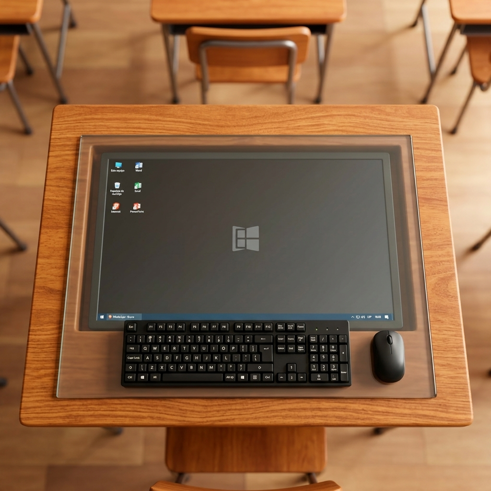
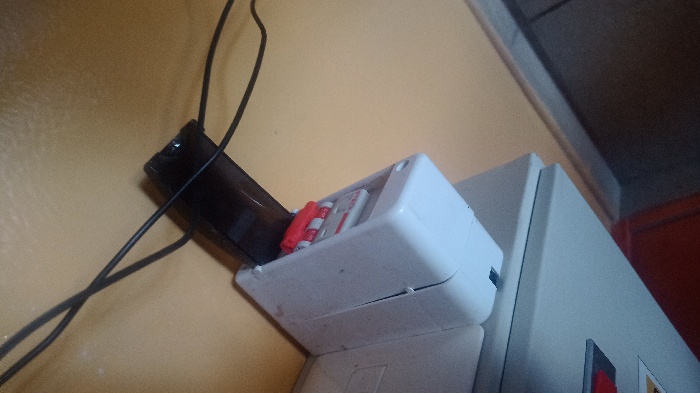
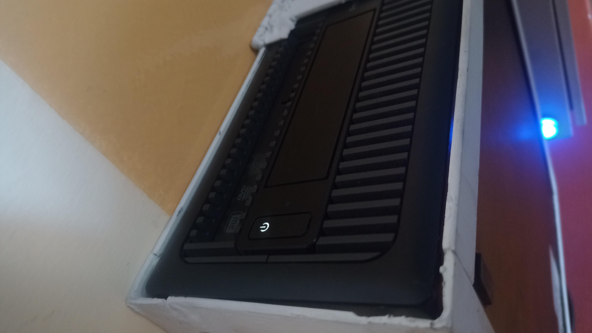
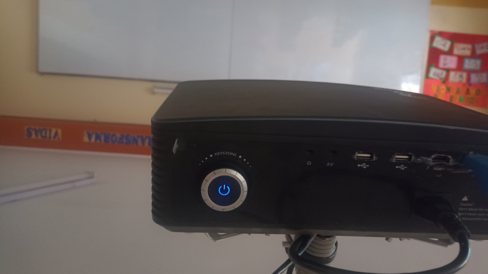
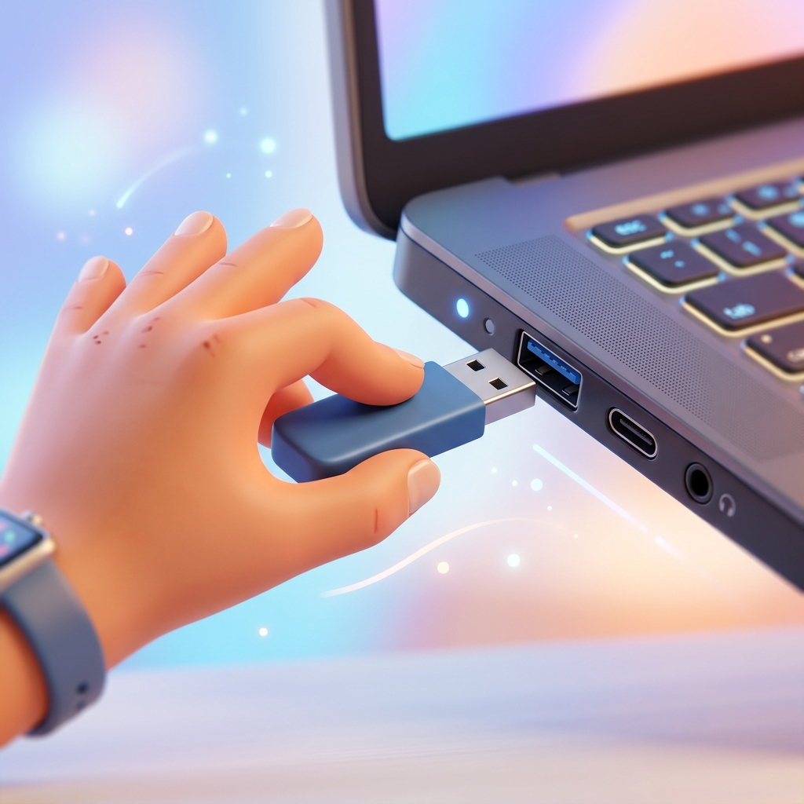

Preparar Equipo
Ubique la computadora en el escritorio. Coloque el teclado y el mouse en una posición cómoda para trabajar durante su clase.

Corriente Eléctrica
Encienda el switch principal de corriente eléctrica ubicado en la pared para suministrar energía a los equipos.

Encender PC
Presione el botón de encendido (Power) en el CPU de la computadora y asegúrese de que el monitor también esté encendido.

Encender Proyector
Presione el botón de encendido en el proyector (el diseño del botón puede variar según el modelo) o use el control remoto. Espere unos segundos hasta que dé imagen.

Conectar Memoria USB
Por último, inserte su memoria USB en uno de los puertos frontales del CPU para acceder al material y presentaciones de su clase.
¡Todo Listo!
Los equipos están encendidos y preparados. ¡Que tenga una excelente clase en el Colegio Divina Misericordia!